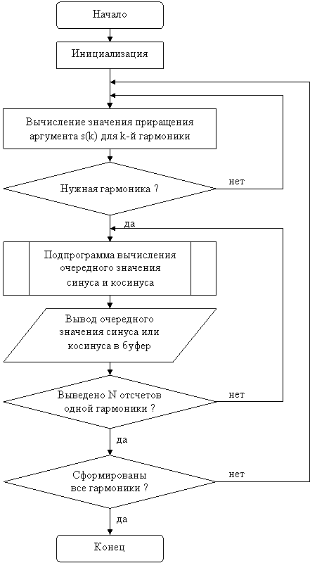

Другой аналитический метод основан на формулах двойного угла:
sin(2α) = 2· sin(α)·cos(α), cos(2α) = cos2(α)–sin2(α)=1–2· sin2(α)=2· cos2(α)–1. |
(2.1) |
Для вычисления косинуса целесообразно использовать второе выражение, т.к. первое требует возведения в квадрат двух значений, а третье – дает не точный результат из-за того, что косинус малого угла близок к единице.
Данный метод позволяет вычислить синус и косинус любого угла, но требует больше затрат для вычисления последовательных отсчетов синуса и косинуса.
Суть метода заключается в вычислении очередного значения аргумента синуса (косинуса) a(n)=a(n-1)+s(k), где s(k) – шаг приращения аргумента (угла) для k-й гармоники. При этом данный шаг вычисляется по аналогичной формуле s(k)=s(k-1)+a, где a=2P/N – приращение аргумента первой гармоники.
Для вычисления функции аргумент a(n) делится на два m раз до тех пор, пока не будет выполняться с заданной точностью соотношение sin(α)»α, где α=a/2m.
После чего, применив m раз вышеприведенные формулы (2.1) и использовав в качестве первого приближения sin(α) = α и cos2(α) = 1 – sin2(α) = 1 – α2, получим значения синуса и косинуса угла a(n).
Например, для угла 0.0625 рад (0.0625´32768=2048=800h) точное значение синуса равно 0.0624593 (2046.7»7FFh), а косинуса – 0.9980475 (32704»7FC0h); для угла 0.03125 рад (1024=400h) значение синуса равно 0.0312449 (1023.8»400h), а косинуса – 0.9995117 (32752»7FF0h), и для угла 0.015625 рад (512=200h) значение синуса равно 0.0156244 (511.9»200h), а косинуса – 0.9998779 (32764»7FFCh).
Поскольку точные значения косинуса малого угла отличаются от единицы, то для повышения точности расчета следовало бы для его первого приближения находить значение из выражения cos2(α) = 1 – sin2(α). Но так как вычисление квадратного корня трудоемкая операция, то с достаточно высокой точностью можно получить значение косинуса по формуле cos(α) = 1 – α2/2, что для малых углов дает очень хорошее приближение. По этой формуле для трех приведенных выше углов получим следующие значения: 0.9980469 (32704»7FC0h), 0.9995117 (32752»7FF0h) и 0.9998779 (32764»7FFCh). Из приведенных выше расчетов видно, что с точностью ½ младшего разряда мы получим результат при углах, меньших 0.03125 рад или 1,8 ° (1024=400h).
Для нахождения m и для деления на 2m можно использовать специализированные команды цифрового процессора сигналов (ЦПС) EXP и NORM. Так, например, если порог равен 400h, а аргумент равен 0.09473 рад (0C20h), то его необходимо разделить на 2 два раза (m=2), чтобы получить значение 308h, меньшее порога. Исходное число после загрузки в старшую часть 40-разрядного аккумулятор содержит слева 3 незначащих двоичных нуля (000C200000h), а максимальное число, меньшее порога, – 5 (0003FF0000h), т.к. незначащие нули считаются без 8-ми защитных разрядов. Выполнив команду EXP, мы получим в регистре T значение 3, и, вычтя его из 5, мы получим 2, что равно m, для организации цикла итерационных вычислений по формуле (2.1) нужно m-1 (т.е. 4-Т), которое загружается во вспомогательный регистр. А для деления на 2m нужно число -m, которое получается вычитанием из регистра T значения 5, и, использовав команду NORM, получим в старшей части аккумулятора значение 0C20h, деленное на 2m, т.е. 308h. Если в результате выполнения команды EXP в регистре T получается значение ³5, то значит аргумент меньше порога и итерации выполнять не нужно, а в качестве синуса берется sin(α) = α.
При программировании синусоиды данным методом необходимо учесть следующие замечания:
- поскольку аргумент и шаг могут быть >1 (максимальное значение аргумента 6.28=2P), то для исключения переполнения необходимо промасштабировать все переменные (разделить на 8);
- значение m-1=7-Т (у порога 8 нулей), а для команды NORM из регистра T нужно вычитать по прежнему 5, а не 8, чтобы восстановить аргумент (/2m и *8);
- вычисления выполняются без коррекции переполнения (увеличение аргумента), а для коррекции переполнения (при записи) используется бит SST в PMST;
- необходима проверка для малых углов (меньше порога), иначе получится отрицательное число переполнений.
Схема алгоритма формирования последовательности синусоид с возрастающей частотой методом двойного угла представлена на рис. 2.1 и отличается от схемы алгоритма из первой лабораторной работы только формированием начального значения аргумента для k-й гармоники.

Рисунок 2.1 – Схема алгоритма формирования последовательности синусоид
- Изучить теоретические сведения по теме лабораторной работы (подразд. 2.2).
- Получить у преподавателя задание для выполнения практической части работы.
- Согласно заданию написать, оттранслировать и выполнить программу.
- Продемонстрировать результат трансляции и работы программы преподавателю.
- Оформить и защитить отчет по лабораторной работе.
- Цель работы и исходные данные.
- Описание алгоритма работы программы.
- Листинг программы с комментариями.
- Выводы по работе.